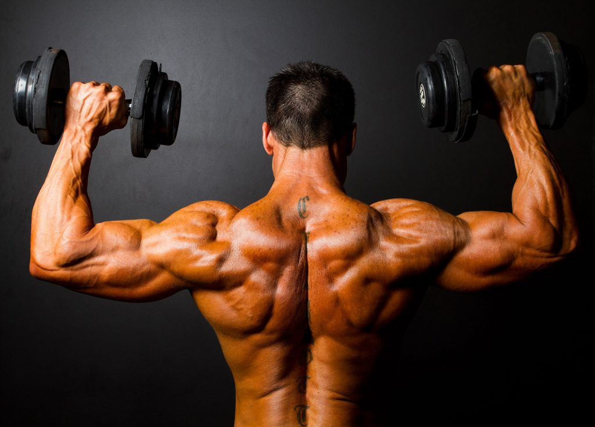
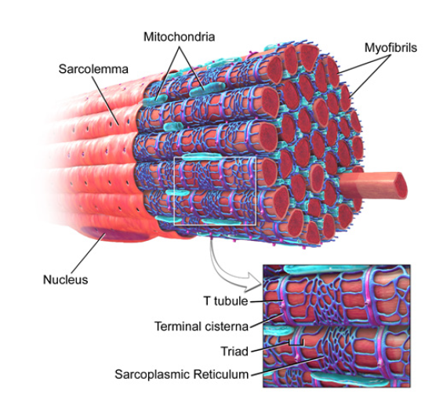
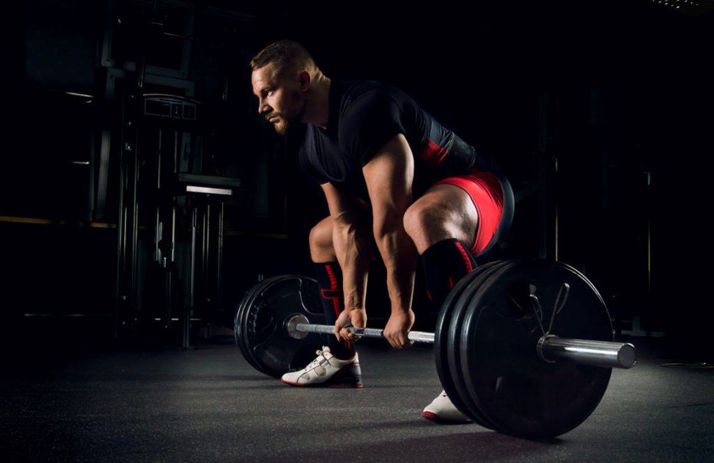
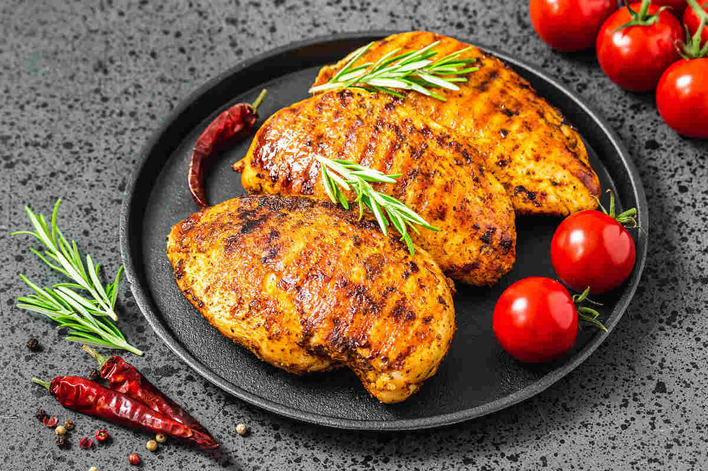
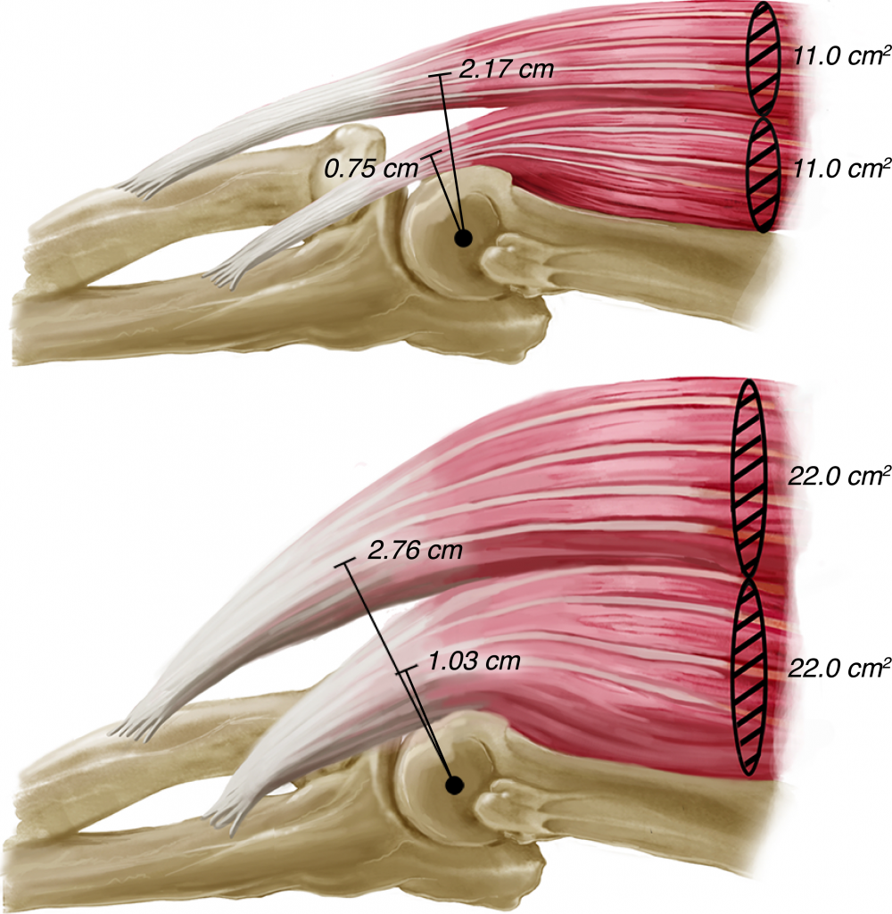
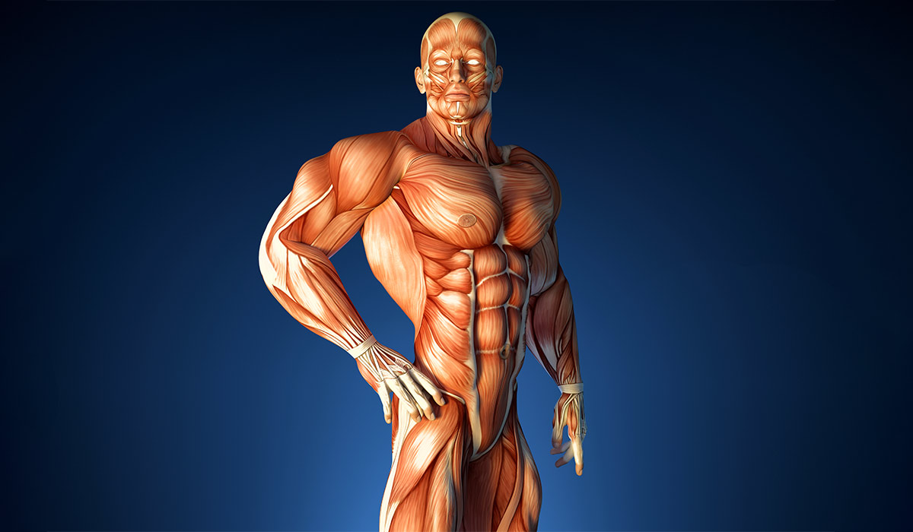
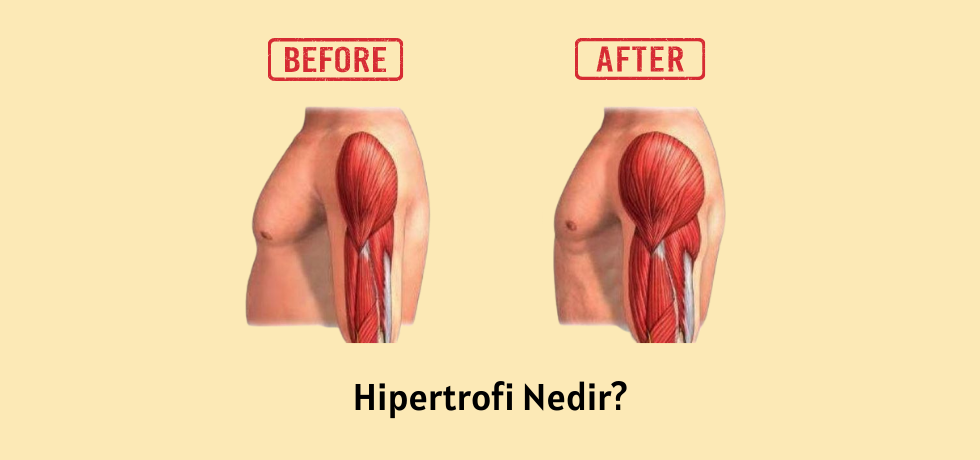

Hakkımda
Merhaba, ben bir öğrenciyim ve kas hipertrofisi konusuna büyük ilgi duyuyorum. Bu projede, konuya olan ilgim ve öğrenme isteğimle birlikte mümkün olduğunca özgün bir web sitesi oluşturmaya çalışıyorum. Fitness ve sağlıklı yaşam tarzı benim için önemli ve insanları bu konuda bilinçlendirmek ve motive etmek benim en büyük hedefim. Amacım, insanlara sağlıklı yaşam konusunda doğru bilgileri sağlamak ve onları kas hipertrofisi ve fitness dünyasına yönlendirmektir.
Kas Hipertrofisi
Kas hipertrofisi, kas liflerinin hacminin artması ve böylece kas dokusunun büyümesi sürecini ifade eder. Egzersiz yapmak veya ağırlık kaldırmak gibi fiziksel aktiviteler, kas liflerine stres uygulayarak bu süreci tetikler. Kas hücrelerindeki mikro hasarın iyileşmesi ve yeniden yapılanma süreci, kasların daha büyük ve daha güçlü hale gelmesine neden olur. Kas hipertrofisi genellikle direnç antrenmanı ve uygun beslenme ile ilişkilendirilir ve sporcuların, vücut geliştiricilerin ve fitness tutkunlarının hedeflerinden biridir. 
Nasıl Gerçekleşir?
Kas hipertrofisi, genellikle düzenli olarak yapılan direnç antrenmanlarıyla gerçekleşir. Antrenman sırasında, kas liflerine uygulanan stres, mikro hasara yol açar. Bu mikro hasarın onarılması ve kasların büyümesi için dinlenme ve uygun beslenme önemlidir. Protein ve kalori bakımından zengin bir beslenme planı, kasların büyümesini destekleyebilir. Ayrıca, uygun dinlenme süreleri ve antrenman programları da kas hipertrofisinin gerçekleşmesine katkı sağlar.
Kas Hipertrofisi Türleri
Kas hipertrofisi genellikle iki ana türde oluşur: Sarkoplazmik hipertrofi ve miyofibriller hipertrofisi.
Sarkoplazmik Hipertrofi: Bu tür hipertrofi, kas hücrelerindeki sarkoplazmanın (hücre içi sıvı)
artmasıyla gerçekleşir. Bu, kas hücrelerinin hacminin artmasına ve dolayısıyla kasın daha büyük görünmesine
neden olur. Genellikle vücut geliştirme gibi yüksek hacimli antrenmanlarla ilişkilendirilir.
Miyofibriller Hipertrofisi: Bu tür hipertrofi, kas liflerinin içindeki miyofibrillerin
(kas lifinin kontraksiyonunu sağlayan protein yapıları) artmasıyla gerçekleşir. Bu, kasın daha güçlü ve
dayanıklı hale gelmesine neden olur. Genellikle düşük tekrarlı, yüksek ağırlıklı antrenmanlarla ilişkilendirilir.

Kas hipertrofisi türlerini detaylı incelemek isterseniz
buraya tıklayınız
Genlerin Kas Hipertrofisinde Etkisi
Genler, kas hipertrofisi üzerinde önemli bir rol oynar. Her bireyin genetik yapısı farklıdır ve bu, kasların
büyümesi ve gelişmesi sürecindeki potansiyelini belirler. Örneğin, bazı bireylerin genetik olarak daha yüksek
bir kas büyüme potansiyeline sahip olduğu bilinmektedir.
Bununla birlikte, genler yalnızca potansiyeli belirler; gerçek kas hipertrofisi, uygun antrenman ve beslenmeyle
sağlanır. İyi bir antrenman programı ve protein açısından zengin bir beslenme planı, genetik potansiyelin
maksimum düzeyde kullanılmasına yardımcı olabilir.
Kas Hipertrofisi Elde Etmek için Ne Sıklıkta Egzersiz Yapılmalı?
Egzersiz sıklığı, kas hipertrofisi elde etmek için önemli bir faktördür. Genel olarak, haftada en az
3 ila 4 kez direnç antrenmanı yapılması önerilir. Bu, her kas grubunun haftada en az bir veya iki
kez çalıştırılmasını sağlar.
Egzersiz sıklığı kişisel hedeflere, antrenman programına ve antrenman yoğunluğuna bağlı olarak değişebilir.
Bazı kişiler haftada 5 veya 6 gün antrenman yapmayı tercih ederken, diğerleri için haftada 3 gün yeterli olabilir.
Antrenman günleri arasında uygun dinlenme ve iyileşme sağlamak da önemlidir. Aşırı antrenman ve yetersiz
dinlenme, kas hipertrofisini olumsuz etkileyebilir.
.jpg)
Kas Hipertrofisi Elde Etmek için Ne Sıklıkta Egzersiz Yapılmalı konusunu detaylı incelemek isterseniz
buraya tıklayınız
Egzersizlerden Kas Hipertrofisi İçin En İyi Şekilde Fayda Sağlamanın Yolları
Kas hipertrofisi elde etmek için egzersizlerinizi optimize etmenin birkaç yolu vardır:
1. Varyasyon: Egzersiz programınızda çeşitlilik sağlayın. Farklı egzersizler ve varyasyonlar
kullanarak farklı kas gruplarını hedefleyin.
2. Yoğunluk: Egzersizlerinizi yüksek yoğunlukta yapın. Ağırlık kaldırma veya direnç
antrenmanları yaparken kasları uygun şekilde zorlayın.
3. Doğru Teknik: Egzersizleri doğru teknikle yapın. Doğru form ve tekniği kullanarak
kasları en etkili şekilde çalıştırın ve sakatlanma riskini azaltın.
4. İleri Seviye Egzersizler: Egzersiz programınızı zamanla ilerletin. Yeni egzersizler
ekleyin, ağırlıkları artırın veya antrenman yoğunluğunu artırın.
5. Yeterli Dinlenme: Kasların büyümesi ve iyileşmesi için yeterli dinlenme şarttır.
Egzersiz yaparken kaslara yeterli zaman tanıyın ve uygun dinlenme süreleri verin.

Kas Yapmak için Nasıl Beslenmek Lazım?
Kas yapmak için doğru beslenme önemlidir. İşte kas yapmak için dikkate almanız gereken bazı beslenme prensipleri:
1. Yeterli Protein Alımı: Kaslarınızın büyümesi ve onarımı için yeterli miktarda protein almalısınız.
Protein kaynakları arasında tavuk, balık, yumurta, süt ürünleri, kırmızı et, fasulye ve mercimek gibi gıdalar bulunur.
2. Dengeli Beslenme: Karbonhidratlar, yağlar, proteinler, vitaminler ve mineralleri içeren dengeli
bir beslenme planı oluşturun. Her besin grubundan yeterli miktarda almak önemlidir.
3. Yeterli Kalori Alımı: Kas yapmak için yeterli kalori alımına dikkat edin. Egzersiz yaparken
enerji harcanır, bu nedenle vücudunuzun ihtiyacı olan kalori miktarını karşılamak önemlidir.
4. Sağlıklı Yağlar: Sağlıklı yağlar, hormonal dengeyi destekler ve kas büyümesini teşvik eder.
Somon, avokado, zeytinyağı, ceviz ve keten tohumu gibi sağlıklı yağ kaynaklarına odaklanın.
5. Yeterli Su Tüketimi: Egzersiz yaparken vücuttan su kaybı artar, bu nedenle yeterli su içmek
önemlidir. Hidrasyon seviyenizi korumak için gün boyunca yeterli miktarda su tüketmeye özen gösterin.

Kas Boyutu Nasıl Artırılır?
Kas boyutunu artırmak için aşağıdaki yöntemleri uygulayabilirsiniz:
1. Direnç Antrenmanı: Ağırlık kaldırma ve direnç antrenmanları yaparak kaslarınızı geliştirin.
Farklı egzersizler ve varyasyonlar kullanarak farklı kas gruplarını hedefleyin.
2. Yeterli Protein Alımı: Kasların büyümesi ve onarımı için yeterli miktarda protein almalısınız.
Protein kaynakları arasında tavuk, balık, yumurta, süt ürünleri, kırmızı et, fasulye ve mercimek gibi gıdalar bulunur.
3. Yeterli Kalori Alımı: Kas yapmak için yeterli kalori alımına dikkat edin. Egzersiz
yaparken enerji harcanır, bu nedenle vücudunuzun ihtiyacı olan kalori miktarını karşılamak önemlidir.
4. Dinlenme ve İyileşme: Egzersizden sonra kaslarınızın iyileşmesi ve büyümesi için yeterli
dinlenme süresi sağlayın. Aşırı antrenman ve yetersiz dinlenme kas büyümesini olumsuz etkileyebilir.
5. Hidrasyon: Egzersiz yaparken vücuttan su kaybı artar, bu nedenle yeterli su içmek
önemlidir. Hidrasyon seviyenizi korumak için gün boyunca yeterli miktarda su tüketmeye özen gösterin.

Kas Hipertrofisinin Faydaları Nelerdir?
Kas hipertrofisinin birçok faydası vardır:
1. Güç ve Dayanıklılık: Kas hipertrofisi, kasların daha güçlü ve dayanıklı hale gelmesini sağlar.
Bu, günlük aktivitelerde ve spor performansında artışa neden olabilir.
2. Metabolik Sağlık: Düzenli egzersiz ve kas hipertrofisi, metabolizmayı artırarak yağ yakımını
teşvik edebilir ve insülin duyarlılığını artırabilir.
3. Kemik Sağlığı: Direnç antrenmanı, kemik yoğunluğunu artırabilir ve osteoporoz riskini azaltabilir.
4. Vücut Kompozisyonu: Kas hipertrofisi, vücut yağ oranını azaltabilir ve kas kütlesini artırarak
daha fit ve şekilli bir görünüme sahip olmanıza yardımcı olabilir.
5. Psikolojik Faydalar: Egzersiz yapmak ve kas hipertrofisi elde etmek, stresi azaltabilir,
özgüveni artırabilir ve genel ruh halini iyileştirebilir.

Hipertrofi Nedir?
Hipertrofi, bir dokunun hücrelerinin boyutlarının artmasıdır. Kas hipertrofisi ise özellikle kas dokusunun boyutlarının artmasıdır. Bu genellikle düzenli egzersiz yaparak kasların büyümesi ve güçlenmesi sürecinde meydana gelir. Kas hipertrofisi, kas liflerinin daha büyük ve daha güçlü hale gelmesine ve genel olarak vücut şeklinin ve performansının iyileşmesine yol açar. Sporcular, vücut geliştiriciler ve fitness tutkunları genellikle kas hipertrofisini hedefler. Bununla birlikte, kas hipertrofisi aynı zamanda genel sağlık ve fiziksel uygunluk için de önemlidir. 
Hipertrofi Hakkındaki Düşüncelerim
Hipertrofi, vücut geliştirme ve fitness dünyasında önemli bir kavramdır. Kasların büyümesi ve güçlenmesi,
sadece fiziksel görünümümüzü değil, aynı zamanda sağlık ve performansımızı da olumlu yönde etkiler. Düzenli
egzersiz yaparak kas hipertrofisi elde etmek, kişisel hedeflerimize ulaşmamıza ve daha sağlıklı bir yaşam
tarzı benimsememize yardımcı olabilir. Bununla birlikte, kas hipertrofisi için yeterli beslenme, uygun
dinlenme ve doğru egzersiz programı gibi faktörlerin dikkatlice takip edilmesi gereklidir. Kendi
deneyimlerimde, düzenli egzersiz ve sağlıklı yaşam tarzı benimsemenin hem fiziksel hem de zihinsel
sağlığım üzerinde olumlu bir etkisi olduğunu gözlemledim.
Kas hipertrofisi sadece bedensel değişikliklerle sınırlı değildir; aynı zamanda kişinin disiplin,
dayanıklılık ve motivasyon gibi özelliklerini geliştirir. Egzersiz sırasında yaşanan zorluklar
ve başarılar, kişisel gelişimimiz üzerinde derin etkiler bırakır. Kendimi daha güçlü ve sağlıklı
hissetmemin yanı sıra, kas hipertrofisi benim için bir yaşam tarzı haline geldi. Her antrenmanda
kendimi aşmaya ve daha iyi bir versiyonum olmaya çalışıyorum. Bu süreçte, kendimi tanımak,
sınırlarımı keşfetmek ve aşmak benim için önemli bir motivasyon kaynağı oldu.